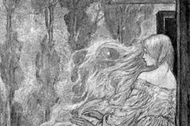

Una pareja de esposos hacía mucho tiempo que sufrían porque no podían tener un bebé, pero un día la esposa supo que Dios le daría pronto un hijo. En la parte posterior de la casa había un jardín muy bello, pero al frente había un gran muro que separaba la casa y no dejaba ver más allá.
Se decía que el muro le pertenecía a una bruja muy mala. Pero un día de tanto mirar el jardín, a la esposa se le antojaron comer unos rapunzeles que estaban cerca al muro, pero a pesar del riesgo su esposo no dudo en lanzarse al jardín. El esposo cayo pesadamente pero pronto se incorporo y llevo corriendo un gran puñado de rapunzeles para su amada esposa.
Una vez que ella lo preparo y comió, luego le gustaron tanto que se antojaba mucho mas de ellas, el esposo que no quería que la ansiedad y el antojo enfermaran a su esposa, se arriesgo una vez mas y fue al jardín. Llegando allí se vio cara a cara con la malvada hechicera quien enojada le reclamo:
-“¿Como es posible que te hayas atrevido a ingresar a mi jardín como un vulgar ladrón”?.
-“Es que mi esposa esta embarazada y tiene muchos antojos de rapunzeles”.
Más calmada la bruja pensó un poco y continuo diciendo:
-“Si es así entonces llevaras todo lo que ella quiera de mi jardín con la condición de entregarme tu bebé, no le faltara nada y estará bien cuidado”. dijo la hechicera.
El esposo muy afectado acepto la condición y llevo todo lo que se le antojaba a su esposa.
Cuando la niña nació la bruja se la llevo, la bebé era muy bella y la llamo desde entonces Rapunzel. Cuando tuvo doce años la llevo a la niña a vivir sola en el bosque y la mantuvo incomunicada en una torre que no tenía ni puerta ni escalera. Cada vez que ella quería ver a la niña, le pedía que soltara sus largas trenzas para subir e ingresar por la ventana. Y así era cada vez que quería.
Pasaron unos años y el príncipe que oyó el canto de Rapunzel, quedo maravillado de su dulce y encantadora voz. Hasta que un día logró subir, al estar frente a ella, ésta quedo espantada, pues creyendo que sería su madrastra la bruja, ella soltó sus trenzas sin imaginar encontrarse cara a cara con un príncipe.
Cuando la convenció de sus buenas intenciones Rapunzel decidió que aceptaría irse con el hijo del rey. Pero un día engañado por la bruja, al subir a la torre, se encontró con la malvada mujer, su amada ya no estaba allí.
La bruja se burlo del príncipe quien desesperado salto de la torre lastimándose y quedando ciego, así vago por el bosque durante varios años. Pero un día oyó la voz de su amada y al fin se encontraron ellos y los dos gemelos que Rapunzel tuvo del príncipe.
Rapunzel muy triste al ver ciego a su amado lo recostó en su piernas y lloro, sus lágrimas cayeron en los ojos de su príncipe y al fin pudo recuperar la visión. Fueron a vivir a palacio y todos fueron muy felices.
